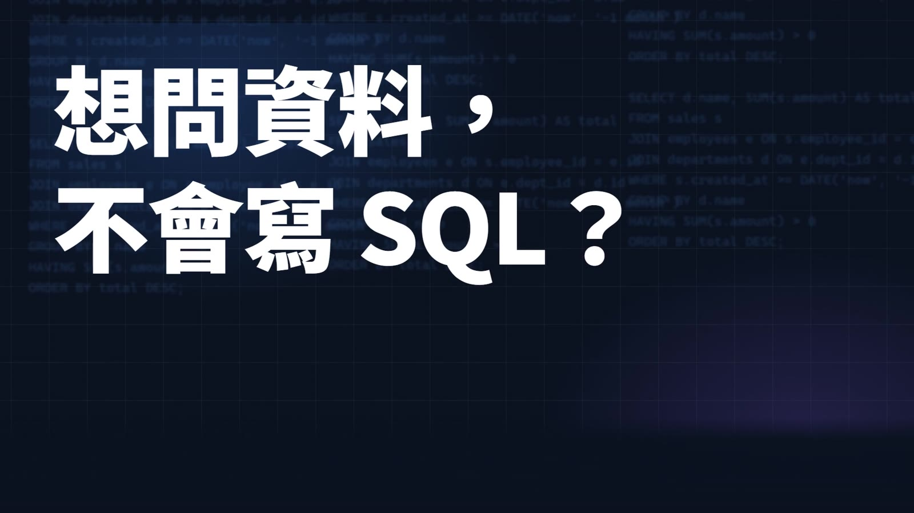
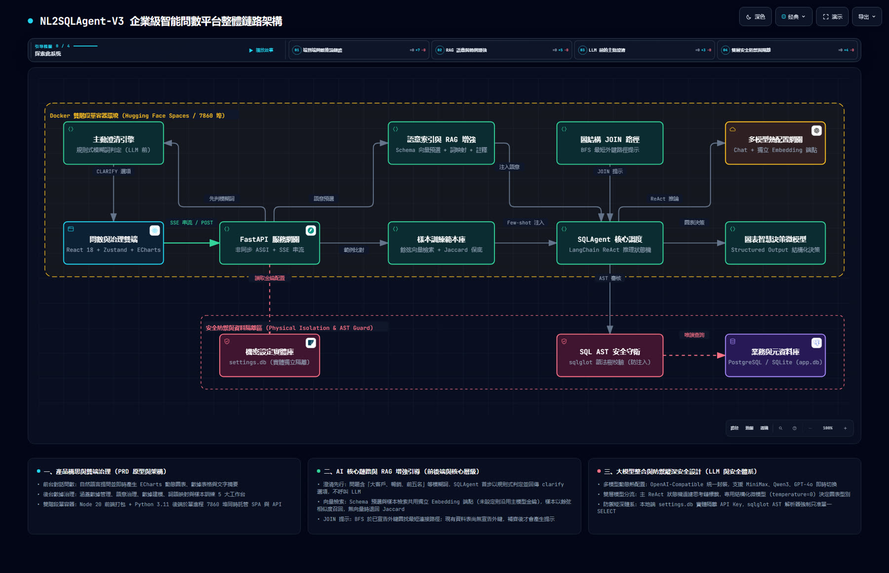
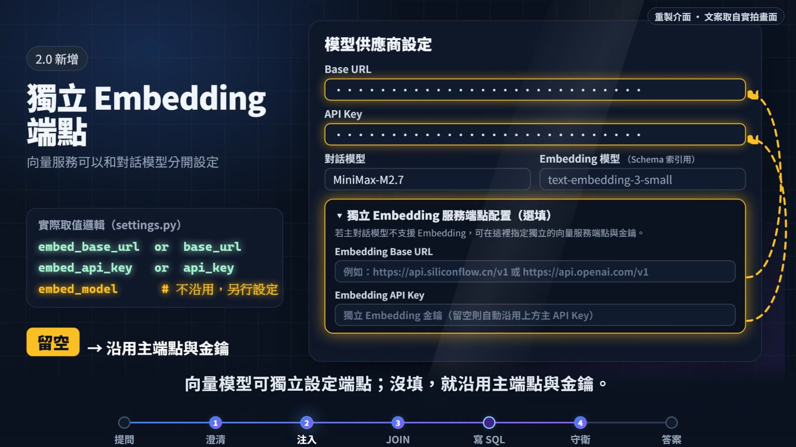

68 秒看完整個流程
旁白＋字幕，十個畫面。沒時間往下捲的話，先看這支。點下面章節可直接跳。
旁白：Gemini 3.8 Flash TTS（Kore 音色）。配樂與音效取自 test-guizang-video 起步專案的素材。畫面為 2026-09-19 本機實拍截圖與重製介面（文案取自實拍）。旁白若有發音誤差，以畫面字幕為準；音量與發音尚未由本人實聽確認。
先講人話：它在解決什麼？
資料在資料庫裡，但要查就得寫 SQL。這個系統讓你直接用中文問，並且把「怎麼查」攤開給你檢查。

用中文提問；口徑不明就先反問，不硬猜。
SQL 與結果並列，右側面板可檢視、可編輯。
只放行單一 SELECT；系統表一律擋下；後台維護語意。
看真實畫面（2026-09-19 本機實拍）
全貌：櫃台、總機、門房、領航員、分析師、警衛
點圖上任一方塊，看它「像什麼」、「真名叫什麼」、程式放在哪。切換上方按鈕，用比喻或技術名詞看。
圖為依程式整理的簡圖；原始全鏈路架構圖（archify 產出的實拍檔）見下方。虛線外框為單一容器（Hugging Face Spaces 要求監聽 7860 埠）。

一個問題的旅程
你在輸入框按下 Enter 之後，發生了什麼？點步驟看圖。
事件類型取自 chat.py 與 agent.py；澄清時改送 text → clarify → done，不進入模型。
四道關卡：各自做什麼、不做什麼
前兩道在「模型寫 SQL 之前」，後兩道一道補路徑、一道在「執行之前」把關。每一頁都寫了限制。
| 關卡 | 像什麼 | 呼叫模型？ | 程式位置 |
|---|---|---|---|
| ① 澄清先行 2.0 新增 | 門房：先問清楚再放行 | 否（在初始化 LLM 之前回傳） | agent.py _check_ambiguity_clarification |
| ② 語意注入 | 領航員：先把脈絡交給分析師 | 否；向量檢索會呼叫 embedding 端點（失敗退回字面比對） | schema_index.py · sample_store.py semantic_store.py |
| ③ JOIN 路徑 2.0 新增 | 地圖員：只走已宣告的路 | 否（純演算法 BFS） | graph_path.py |
| ④ 語法樹守衛 | 警衛：不看長相，看語法 | 否（sqlglot 本地解析） | sql_guard.py |
試玩：問題會不會被反問？
下面這個判定器，是把 agent.py 裡的 5 組關鍵字與排除詞原樣搬過來：打一句話，看它會不會被反問。點選選項，會像真的一樣把選項當成新問題再判定一次。
規則來源：agent.py 第 70–138 行（關鍵字、排除詞、問句與選項逐字相同）；命中後送出 text、clarify、done 三個事件並結束，不呼叫模型。選項是內建範本，不依資料庫欄位產生。
守衛案例：哪些 SQL 會被擋下？
模型寫出的 SQL，在真正執行前會先被解析成語法樹。點下面案例，看守衛怎麼判。
如實說明：這些判定是依 sql_guard.py 逐行推演，未實際執行（此機器未安裝 sqlglot，也未擅自安裝）；sql_guard 目前沒有單元測試。系統表清單：app_settings、chat_sessions、chat_messages、alembic_version。
管理後台：五個工作台
語意和範例不是寫死的：由管理員在後台維護，下一次提問就會被注入。點橘色圓點。
實拍環境（2026-09-19）：12 張表、0 個外鍵、4 個推測關聯；樣本 10 筆；詞語映射與欄位描述皆為 0 筆。
怎麼跑起來？
本機開發：後端 FastAPI＋前端 Vite；雲端部署：單一 Docker 容器。以下依 README 與 Dockerfile 整理，本次未實際啟動。
- 後端：進
backend、建虛擬環境、pip install -r requirements.txt，再啟動服務（8000 埠）。 - 前端：進
frontend、npm install、npm run dev，打開http://localhost:5173。 - 設定模型：左下角「設定模型供應商即金鑰」填對話模型與 API Key；Embedding 端點選填。金鑰存在 settings.db，不放進業務資料庫。
uvicorn app.main:app --reload --port 8000於 backend/ 目錄執行。API 文件在 /docs，健康檢查在 /health。雲端：Dockerfile 兩階段（Node 20 建前端 → Python 3.11），PORT=7860，Hugging Face Spaces 需 README 前置設定 sdk: docker。

| 路徑（/api 之下） | 用途 | 來源 |
|---|---|---|
| POST /chat | 提問；以 SSE 串流回傳事件 | api/chat.py |
| /sessions… | 對話清單與訊息 | api/session.py |
| /database/upload · /tables · /er-model · /graph · /execute | 上傳資料、表清單、ER 模型、知識圖譜、手動執行 SQL（同樣過守衛） | api/database.py |
| /samples · /semantics/mappings · /semantics/descriptions | 樣本、詞語映射、欄位描述的增刪查 | api/samples.py · semantics.py |
| /settings/llm | 對話模型與（選填）獨立 Embedding 端點 | api/settings.py |
小字典
點一下展開。
看之前，先知道這些
分開「已確認的事實」和「觀察／待確認」。
✅ 已確認事實
- 澄清先於模型：命中 5 組關鍵字之一（且沒有排除詞）就回傳 text、clarify、done，不初始化 LLM。
backend/app/core/agent.py:70–150 - 補脈絡順序：Schema 預選（top-3）→ 相似範例（top-3）→ 詞語映射 → 欄位描述 → JOIN 提示；各項失敗只記錄，不中斷主流程。
agent.py:172–222 - 守衛：sqlglot 解析 AST；只放行單一 SELECT；系統表 app_settings／chat_sessions／chat_messages／alembic_version 一律擋下；Agent 工具呼叫、/execute、範例存檔都會過它。
core/sql_guard.py · agent.py:331 · database.py:510 · sample_store.py:153 - 獨立 Embedding：embed_base_url、embed_api_key 留空時沿用主端點與金鑰；embed_model 不沿用。
models/settings.py:24–32 · test_slice1_embed_settings.py - JOIN 提示以 BFS 在「已宣告外鍵」圖上找最短路徑。
core/graph_path.py · test_slice3_graph_join.py - API Key 存 settings.db，與業務庫實體隔離；啟動時會把舊的 app_settings 搬離業務庫。
main.py（lifespan）· connection.py - 部署：Dockerfile 兩階段、PORT=7860，已從 Vercel（10 秒逾時）遷到 Hugging Face Spaces Docker。
Dockerfile · MIGRATION_LOG_20260422.md
⚠️ 觀察／待確認
- 版本：2.0 功能只在
backend-overhaul分支（HEAD 2ad5146），尚未併入main。 - README 過時：仍寫「阿里雲百炼 Qwen3、Phase 1–4」，與程式（OpenAI 相容、多供應商設定）不符；本頁以程式為準。
- 澄清很「硬」：固定關鍵字＋內建選項，不依資料庫欄位產生（例：「會員等級為 VIP」在範例庫沒有對應欄位）。
- 向量檢索在實拍環境沒生效：主端點對 embedding 模型回 503，Schema 索引建置失敗，樣本檢索退回 Jaccard。
- JOIN 提示在實拍環境沒產生：範例資料 0 個外鍵（4 條推測關聯不進 BFS）。
- 守衛屬既有機制（升級規格書標為 1.0），無單元測試；本頁案例為程式推演，未實跑。
- 實拍畫面：AI 回覆顯示為原始 markdown 表；圖表標題「平均值統計」為規則式備援標題，可能代表該次走了備援（推測）。
- 示意內容：BFS 範例（orders／customers／regions）取自單元測試，非實際資料庫；「完成 → completed」為後台的示意範例。
- 部署：HF Space
NL2SQLAgent-HF-v2存在，但無法確認部署的是 2.0 分支。 - 影片：旁白發音與音量未經人耳確認；最後一輪獨立評審（critic）因用量額度未執行；SFX 為量測而非實聽。
- 未實測：本頁「怎麼跑起來」依 README 與 Dockerfile 整理，沒有啟動服務。